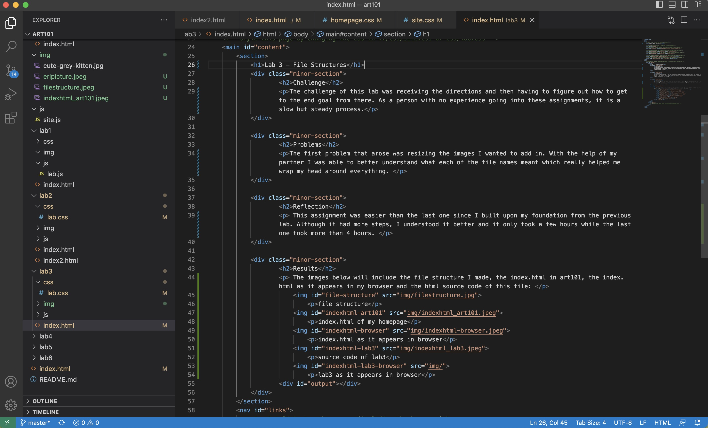

Lab 3 - File Structures
Challenge
The challenge of this lab was receiving the directions and then having to figure out how to get to the end goal from there. As a person with no experience going into these assignments, it is a slow but steady process.
Problems
The first problem that arose was resizing the images I wanted to add in. With the help of my partner I was able to better understand what each of the file names meant which really helped me wrap my head around everything.
Reflection
This assignment was easier than the last one since I built upon my foundation from the previous lab. Although it had more steps, I understood it better and it only took a few hours while the last one took more than 4 hours.
Results
The images below will include the file structure I made, the index.html in art101, the index.html as it appears in my browser and the html source code of this file:
file structure
index.html of my homepage
index.html as it appears in browser
source code of lab3
lab3 as it appears in browser